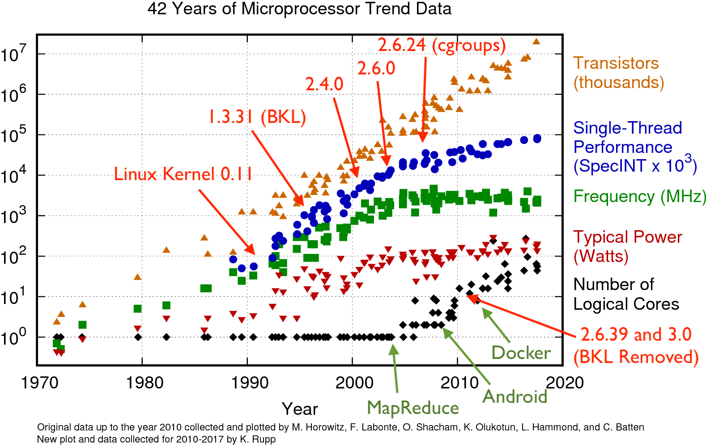

<html>
  <Head>
<meta http-equiv="Content-Type" content="text/html; charset=utf-8">

    
    

    <link rel="stylesheet" href="../static/css/fonts/crmison.css"/>
    <link rel="stylesheet" href="../static/css/fonts/fira_code.css"/>
    <link rel="stylesheet" href="../static/css/fonts/ptsans.css"/>
    <link rel="stylesheet" href="../static/css/katex.min.css"/>
    <link rel="stylesheet" href="../static/css/wiki.css"/>
    <link rel="stylesheet" href="../static/css/codehilite.css"/>

    <script src="../static/js/jquery.min.js"></script>
    <script src="../static/js/bootstrap.bundle.min.js"></script>
    <script src="../static/js/katex.min.js"></script>
    
<link rel="stylesheet" href="../static/css/reveal.css"/>
<link rel="stylesheet" href="../static/css/reveal-slides.css"/>


    <title>设备驱动程序</title>
  </Head>
  <body>
   
   

<div class="reveal">
  <div class="slides">
    <section>
<div class="slide-container"><div class="center middle"><h1 id="_1">设备驱动程序</h1>
<div plugin="include(page='Slides_Author')"><div class="hidden-in-outline author-block author-affiliation">
<p><a href="http://ics.nju.edu.cn/~jyy">蒋炎岩</a></p>
</div>
<div class="row hidden-in-outline author-block justify-content-md-center">
<p><div class="author-affiliation">    <a href="http://www.nju.edu.cn/"><p>南京大学</p>    </img></a>
  </div>
  <div class="author-affiliation">
   <a href="http://cs.nju.edu.cn/"><p>计算机科学与技术系</p>
    </img></a>
  </div>
  <div class="author-affiliation">
    <a href="http://moon.nju.edu.cn/"><p>计算机软件研究所</p>
    </img></a>
  </div></p>
</div></div></div></div>
</section>

<section>
<div class="slide-container"><div class=""><h2 id="_1">本讲概述</h2>
<blockquote>
<p>我们讲了 CPU 怎么访问 I/O 设备</p>
<p>应用程序怎么访问？</p>
<ul>
<li>操作系统提供接口</li>
</ul>
</blockquote>
<p>本讲内容</p>
<ul>
<li>I/O 设备的抽象</li>
<li>设备驱动程序</li>
<li>应用程序眼中的 I/O 设备</li>
</ul></div></div>
</section>

<section>
<section>
<div class="slide-container"><div class="center middle"><h1 id="io">I/O 设备的抽象</h1></div></div>
</section>
<section>
<div class="slide-container"><div class=""><h2 id="io">I/O 设备：回顾</h2>
<blockquote>
<p>我们真正 “使用” 计算机 (计算机与外界交互) 的部分 (“外设”)</p>
<ul>
<li>键盘、鼠标、显示器、触摸屏、音箱、打印机……</li>
</ul>
</blockquote>
<p>实际上 I/O 设备是 “一组能与 CPU 交换数据的接口”</p>
<p></img></p>
<ul>
<li>CPU 使用指令访问设备寄存器/存储</li>
<li>在此意义上，更多的东西都属于 I/O 设备<ul>
<li>中断控制器、总线, DMA, GPU, ...</li>
</ul>
</li>
</ul></div></div>
</section>
<section>
<div class="slide-container"><div class=""><h2 id="io">操作系统：应该对 I/O 设备做什么？</h2>
<p>应用程序有访问 I/O 设备的需求</p>
<ul>
<li><code>printf</code> 希望输出字符到屏幕/磁盘</li>
<li>浏览器需要向 url 发送 HTTPS 请求</li>
<li>……</li>
</ul>
<div class="fragment">
<p>应用直接访问 I/O 设备的后果</p>
<ul>
<li>再也无法写出 portable 的代码<ul>
<li>printf 并不想知道它向哪个设备上写数据</li>
<li>浏览器也不想知道用哪个厂商的网卡把数据发出去</li>
</ul>
</li>
<li>应用之间需要互斥、同步、协商设备资源的使用<ul>
<li>😂 你不可能把这件事做对的</li>
<li>设备直连物理世界，可能发生物理性的伤害</li>
</ul>
</li>
</ul>
</div>
<div class="fragment">
<blockquote>
<p>操作系统需要对设备进行<span class="red">抽象</span> (虚拟化)</p>
</blockquote>
</div></div></div>
</section>
<section>
<div class="slide-container"><div class=""><h2 id="io-api">需求分析：I/O 设备访问 API 设计</h2>
<p>printf</p>
<ul>
<li>希望向设备写入一个字符串<ul>
<li><code>write(dev, "hello");</code> (还记得 ANSI Escape Code 吗？)</li>
</ul>
</li>
</ul>
<p>浏览器</p>
<ul>
<li>希望从某个 TCP 连接中读出数据<ul>
<li><code>read(conn, buf, size);</code></li>
</ul>
</li>
<li>希望在当前的画布 (canvas) 上执行一些绘图指令<ul>
<li><code>write(wm, draw_cmds, size);</code></li>
</ul>
</li>
</ul>
<div class="fragment">
<blockquote>
<p>I/O 设备的抽象：对设备 (文件描述符) 的 I (read) 和 O (write)</p>
</blockquote>
<p>I/O 设备虽然复杂，但几乎都可以理解成<span class="red">字节的序列</span> (流或数组)</p>
<ul>
<li>(read) 从设备某个指定的位置读出数据</li>
<li>(write) 向设备某个指定位置写入数据</li>
<li>(ioctl) 读取/设置设备的状态</li>
</ul>
</div></div></div>
</section>
<section>
<div class="slide-container"><div class=""><h2 id="_1">操作系统：提供一个硬件抽象层</h2>
<blockquote>
<p>操作系统的本质：管理硬件资源、为程序的执行提供服务</p>
</blockquote>
<p>在操作系统中建立一个新的抽象层</p>
<ul>
<li>以同一个接口访问不同的 I/O 设备</li>
<li>实现接口的代码就是<span class="red">设备驱动程序</span><ul>
<li>把对设备的 HAL 调用翻译成指令</li>
</ul>
</li>
</ul>
<hr></hr>
<p>例子：应用使用系统调用访问文件描述符</p>
<ul>
<li>文件系统 API → (操作系统代码翻译成) → HAL API<ul>
<li>HAL API → (设备驱动翻译成) → 设备指令 & 响应中断</li>
</ul>
</li>
</ul></div></div>
</section>
</section>

<section>
<section>
<div class="slide-container"><div class="center middle"><h1 id="_1">设备驱动程序</h1></div></div>
</section>
<section>
<div class="slide-container"><div class=""><h2 id="_1">设备驱动：硬件抽象层的实现</h2>
<blockquote>
<p>设备驱动程序：对设备进行一定的管理，对上层提供统一的接口</p>
<ul>
<li>以 “面向对象” 的方式访问 I/O 设备<ul>
<li>设备 = 支持 read, write, ioctl, ... 功能的对象</li>
</ul>
</li>
</ul>
</blockquote>
<p>设备驱动程序把 HAL API 调用 (read, write, ioctl) 翻译成指令</p>
<ul>
<li>port I/O; memory-mapped I/O; 总线; DMA; 中断...</li>
</ul>
<div class="fragment">
<hr></hr>
<p></img></p>
<p>道理简单，但写代码就麻烦了</p>
<ul>
<li>I/O 设备看起来是个 “黑盒子”</li>
<li>写错任何代码就 simply “not work”</li>
<li>I/O 设备偏偏还提供巨多的功能<ul>
<li>GPU 自带处理器、内存、编译器、散热管理、……</li>
<li>例如想为 “跑马灯” 编程、调教 GPU 等就需要安装驱动程序和管理应用</li>
</ul>
</li>
</ul>
</div></div></div>
</section>
<section>
<div class="slide-container"><div class=""><h2 id="lab-2">例子: Lab 2 硬件抽象层</h2>
<p>做了很多<span class="red">不合理</span>的简化假设</p>
<ul>
<li>设备从系统启动时就存在且不会消失</li>
<li>只支持读/写两种操作 </li>
</ul>
<div class="codehilite"><pre><span></span><span class="k">typedef</span> <span class="k">struct</span> <span class="n">devops</span> <span class="p">{</span>
  <span class="kt">int</span> <span class="p">(</span><span class="o">*</span><span class="n">init</span><span class="p">)(</span><span class="n">device_t</span> <span class="o">*</span><span class="n">dev</span><span class="p">);</span>
  <span class="kt">int</span> <span class="p">(</span><span class="o">*</span><span class="n">read</span><span class="p">)</span> <span class="p">(</span><span class="n">device_t</span> <span class="o">*</span><span class="n">dev</span><span class="p">,</span> <span class="kt">int</span> <span class="n">offset</span><span class="p">,</span> <span class="kt">void</span> <span class="o">*</span><span class="n">buf</span><span class="p">,</span> <span class="kt">int</span> <span class="n">count</span><span class="p">);</span>
  <span class="kt">int</span> <span class="p">(</span><span class="o">*</span><span class="n">write</span><span class="p">)(</span><span class="n">device_t</span> <span class="o">*</span><span class="n">dev</span><span class="p">,</span> <span class="kt">int</span> <span class="n">offset</span><span class="p">,</span> <span class="kt">void</span> <span class="o">*</span><span class="n">buf</span><span class="p">,</span> <span class="kt">int</span> <span class="n">count</span><span class="p">);</span>
<span class="p">}</span> <span class="n">devops_t</span><span class="p">;</span>
</pre></div>

<p>代码讲解：devices.h, dev_tty.c</p>
<ul>
<li>设备驱动程序：将设备抽象为一个对象和操作<ul>
<li>未必一定要有物理的设备<ul>
<li><code>/dev/null</code>, <code>/dev/urandom</code>, ...</li>
<li>你也能理解它们怎么实现！</li>
</ul>
</li>
</ul>
</li>
</ul></div></div>
</section>
<section>
<div class="slide-container"><div class=""><h2 id="linux">例子：Linux 设备驱动</h2>
<blockquote>
<p><em>Everything is a file</em> (设备也是)</p>
<ul>
<li>所以设备提供文件操作就好了！</li>
<li>这也太复杂了吧，一屏都写不下 (我只列出了大家熟悉的) 😂</li>
</ul>
</blockquote>
<div class="codehilite"><pre><span></span><span class="k">struct</span> <span class="n">file_operations</span> <span class="p">{</span>
  <span class="k">struct</span> <span class="n">module</span> <span class="o">*</span><span class="n">owner</span><span class="p">;</span>
  <span class="n">loff_t</span> <span class="p">(</span><span class="o">*</span><span class="n">llseek</span><span class="p">)</span> <span class="p">(</span><span class="k">struct</span> <span class="n">file</span> <span class="o">*</span><span class="p">,</span> <span class="n">loff_t</span><span class="p">,</span> <span class="kt">int</span><span class="p">);</span>
  <span class="kt">ssize_t</span> <span class="p">(</span><span class="o">*</span><span class="n">read</span><span class="p">)</span> <span class="p">(</span><span class="k">struct</span> <span class="n">file</span> <span class="o">*</span><span class="p">,</span> <span class="kt">char</span> <span class="n">__user</span> <span class="o">*</span><span class="p">,</span> <span class="kt">size_t</span><span class="p">,</span> <span class="n">loff_t</span> <span class="o">*</span><span class="p">);</span>
  <span class="kt">ssize_t</span> <span class="p">(</span><span class="o">*</span><span class="n">write</span><span class="p">)</span> <span class="p">(</span><span class="k">struct</span> <span class="n">file</span> <span class="o">*</span><span class="p">,</span> <span class="k">const</span> <span class="kt">char</span> <span class="n">__user</span> <span class="o">*</span><span class="p">,</span> <span class="kt">size_t</span><span class="p">,</span> <span class="n">loff_t</span> <span class="o">*</span><span class="p">);</span>
  <span class="kt">int</span> <span class="p">(</span><span class="o">*</span><span class="n">mmap</span><span class="p">)</span> <span class="p">(</span><span class="k">struct</span> <span class="n">file</span> <span class="o">*</span><span class="p">,</span> <span class="k">struct</span> <span class="n">vm_area_struct</span> <span class="o">*</span><span class="p">);</span>
  <span class="kt">unsigned</span> <span class="kt">long</span> <span class="n">mmap_supported_flags</span><span class="p">;</span>
  <span class="kt">int</span> <span class="p">(</span><span class="o">*</span><span class="n">open</span><span class="p">)</span> <span class="p">(</span><span class="k">struct</span> <span class="n">inode</span> <span class="o">*</span><span class="p">,</span> <span class="k">struct</span> <span class="n">file</span> <span class="o">*</span><span class="p">);</span>
  <span class="kt">int</span> <span class="p">(</span><span class="o">*</span><span class="n">release</span><span class="p">)</span> <span class="p">(</span><span class="k">struct</span> <span class="n">inode</span> <span class="o">*</span><span class="p">,</span> <span class="k">struct</span> <span class="n">file</span> <span class="o">*</span><span class="p">);</span>
  <span class="kt">int</span> <span class="p">(</span><span class="o">*</span><span class="n">flush</span><span class="p">)</span> <span class="p">(</span><span class="k">struct</span> <span class="n">file</span> <span class="o">*</span><span class="p">,</span> <span class="n">fl_owner_t</span> <span class="n">id</span><span class="p">);</span>
  <span class="kt">int</span> <span class="p">(</span><span class="o">*</span><span class="n">fsync</span><span class="p">)</span> <span class="p">(</span><span class="k">struct</span> <span class="n">file</span> <span class="o">*</span><span class="p">,</span> <span class="n">loff_t</span><span class="p">,</span> <span class="n">loff_t</span><span class="p">,</span> <span class="kt">int</span> <span class="n">datasync</span><span class="p">);</span>
  <span class="kt">int</span> <span class="p">(</span><span class="o">*</span><span class="n">lock</span><span class="p">)</span> <span class="p">(</span><span class="k">struct</span> <span class="n">file</span> <span class="o">*</span><span class="p">,</span> <span class="kt">int</span><span class="p">,</span> <span class="k">struct</span> <span class="n">file_lock</span> <span class="o">*</span><span class="p">);</span>
  <span class="kt">ssize_t</span> <span class="p">(</span><span class="o">*</span><span class="n">sendpage</span><span class="p">)</span> <span class="p">(</span><span class="k">struct</span> <span class="n">file</span> <span class="o">*</span><span class="p">,</span> <span class="k">struct</span> <span class="n">page</span> <span class="o">*</span><span class="p">,</span> <span class="kt">int</span><span class="p">,</span> <span class="kt">size_t</span><span class="p">,</span> <span class="n">loff_t</span> <span class="o">*</span><span class="p">,</span> <span class="kt">int</span><span class="p">);</span>
  <span class="kt">long</span> <span class="p">(</span><span class="o">*</span><span class="n">unlocked_ioctl</span><span class="p">)</span> <span class="p">(</span><span class="k">struct</span> <span class="n">file</span> <span class="o">*</span><span class="p">,</span> <span class="kt">unsigned</span> <span class="kt">int</span><span class="p">,</span> <span class="kt">unsigned</span> <span class="kt">long</span><span class="p">);</span>
  <span class="kt">long</span> <span class="p">(</span><span class="o">*</span><span class="n">compat_ioctl</span><span class="p">)</span> <span class="p">(</span><span class="k">struct</span> <span class="n">file</span> <span class="o">*</span><span class="p">,</span> <span class="kt">unsigned</span> <span class="kt">int</span><span class="p">,</span> <span class="kt">unsigned</span> <span class="kt">long</span><span class="p">);</span>
  <span class="kt">int</span> <span class="p">(</span><span class="o">*</span><span class="n">flock</span><span class="p">)</span> <span class="p">(</span><span class="k">struct</span> <span class="n">file</span> <span class="o">*</span><span class="p">,</span> <span class="kt">int</span><span class="p">,</span> <span class="k">struct</span> <span class="n">file_lock</span> <span class="o">*</span><span class="p">);</span>
  <span class="p">...</span>
</pre></div></div></div>
</section>
<section>
<div class="slide-container"><div class=""><h2 id="ioctl">实际系统的复杂性: ioctl</h2>
<p>道理我都懂</p>
<ul>
<li>我们见过 ioctl 的使用了 (<code>strace stty</code>)</li>
<li>但为什么会需要两个 ioctl？</li>
</ul>
<div class="codehilite"><pre><span></span><span class="kt">long</span> <span class="p">(</span><span class="o">*</span><span class="n">unlocked_ioctl</span><span class="p">)</span> <span class="p">(</span><span class="k">struct</span> <span class="n">file</span> <span class="o">*</span><span class="p">,</span> <span class="kt">unsigned</span> <span class="kt">int</span><span class="p">,</span> <span class="kt">unsigned</span> <span class="kt">long</span><span class="p">);</span>
<span class="kt">long</span> <span class="p">(</span><span class="o">*</span><span class="n">compat_ioctl</span><span class="p">)</span> <span class="p">(</span><span class="k">struct</span> <span class="n">file</span> <span class="o">*</span><span class="p">,</span> <span class="kt">unsigned</span> <span class="kt">int</span><span class="p">,</span> <span class="kt">unsigned</span> <span class="kt">long</span><span class="p">);</span>
</pre></div>
<div class="fragment">
<ul>
<li><code>unlocked_ioctl</code>: BKL (Big Kernel Lock) 时代的遗产<ul>
<li>单处理器时代只有 <code>ioctl</code></li>
<li>之后引入了 BKL, <code>ioctl</code> 执行时默认持有 BKL</li>
<li>(2.6.11) 高性能的驱动可以通过 <code>unlocked_ioctl</code> 避免锁</li>
<li>(2.6.36) <code>ioctl</code> 从 <code>struct file_operations</code> 中移除</li>
</ul>
</li>
<li><code>compact_ioctl</code>: 机器字长的兼容性<ul>
<li>32-bit 程序在 64-bit 系统上可以 ioctl</li>
<li>此时应用程序和操作系统对 ioctl 数据结构的解读可能不同 (tty)</li>
<li>(调用此兼容模式)</li>
</ul>
</li>
</ul>
</div></div></div>
</section>
<section>
<div class="slide-container"><div class=""><h2 id="_1">操作系统：历经的变化</h2>
<p><code>struct file_operations</code> 一直在适应应用场景的变化</p>
<ul>
<li>单处理器 → 多处理器 (集成电路工艺红利消失)</li>
<li>单机 (hobby project) → 服务器 → 云计算/数据中心</li>
</ul>
<p></img></p></div></div>
</section>
<section>
<div class="slide-container"><div class=""><h2 id="_1">怎样在复杂性中生存下来？</h2>
<blockquote>
<p>理解每个设计背后的历史和动机</p>
<ul>
<li>为什么我要 XXX？<ul>
<li>XXX = DMA, GPU, select/poll, aio, ...</li>
</ul>
</li>
<li>是因为以前有一个简单的 YYY 但现在不够用了<ul>
<li>AbstractMachine, oslab, ...</li>
</ul>
</li>
</ul>
</blockquote>
<p>操作系统课的目的</p>
<ul>
<li>掌握 (最简) 操作系统设计和实现原理</li>
<li>学会在只有手册的情况下生存 (M5)<ul>
<li>这样你绝大部分时候都能把未知的代码 “映射” (简化) 到你学过的东西<ul>
<li>你会发现你学完这门课以后，就可以去玩真正的系统了！</li>
<li>Linux Kernel, OpenJDK, LLVM, ...</li>
</ul>
</li>
</ul>
</li>
</ul></div></div>
</section>
</section>

<section>
<section>
<div class="slide-container"><div class="center middle"><h1 id="_1">两类特殊的设备：磁盘、网卡</h1></div></div>
</section>
<section>
<div class="slide-container"><div class=""><h2 id="_1">磁盘与块设备</h2>
<p>磁盘 (存储设备) 的访问特性</p>
<ol>
<li>以数据块 (block) 为单位访问<ul>
<li>传输有 “最小单元”，不支持任意随机访问</li>
</ul>
</li>
<li>大吞吐量<ul>
<li>使用 DMA 传送数据</li>
</ul>
</li>
<li>应用程序一般不直接访问<ul>
<li>访问者通常是文件系统 (维护磁盘上的数据结构)</li>
<li>大量并发的访问 (操作系统中的进程都要访问文件系统)</li>
</ul>
</li>
</ol></div></div>
</section>
<section>
<div class="slide-container"><div class=""><h2 id="linux-block-io-layer">Linux Block I/O Layer</h2>
<p>文件系统和磁盘设备之间的接口</p>
<ul>
<li>I/O 调度器<ul>
<li>曾经是 “电梯” 调度增加性能</li>
<li>现在是 CFQ 保证公平性</li>
</ul>
</li>
</ul>
<p></img></p></div></div>
</section>
<section>
<div class="slide-container"><div class=""><h2 id="_1">块设备：持久数据的可靠性</h2>
<blockquote>
<p>Many storage devices, ... come with <em>volatile write back caches</em></p>
<ul>
<li>the devices signal I/O completion to the operating system before data actually has hit the non-volatile storage</li>
<li>this behavior obviously <em>speeds up</em> various workloads, but ... <em>data integrity</em>...</li>
</ul>
</blockquote>
<p>我们当然可以提供一个 ioctl</p>
<ul>
<li>但 block layer 提供了更方便的机制<ul>
<li>在 block I/O 提交时<ul>
<li><code>| REQ_PREFLUSH</code> 之前的数据落盘后才开始</li>
<li><code>| REQ_FUA</code> (force unit access)，数据落盘后才返回</li>
</ul>
</li>
<li>设备驱动程序会把这些 flags 翻译成磁盘 (SSD) 的控制指令</li>
</ul>
</li>
</ul></div></div>
</section>
<section>
<div class="slide-container"><div class=""><h2 id="_1">网络设备</h2>
<p>网络的访问特性</p>
<ol>
<li>速度非常快<ul>
<li>例如 10,000 Gbps (万兆网卡)</li>
</ul>
</li>
<li>大小不确定<ul>
<li>datagram 可能很小 (几十个个 bytes)、可能很大 (KiB 级)</li>
</ul>
</li>
<li>延迟敏感<ul>
<li><code>while (1)  { read(); process(); }</code> 可能无法达到预期的性能<ul>
<li>数据中心、云计算、……</li>
</ul>
</li>
</ul>
</li>
</ol>
<hr></hr>
<p>网络设备</p>
<ul>
<li>内存 (TX/RX rings) + DMA + 中断</li>
</ul></div></div>
</section>
<section>
<div class="slide-container"><div class=""><h2 id="linux-net">Linux net 子系统</h2>
<p>Linux Kernel 用独立的子系统 (设备抽象和 API) 管理网络设备</p>
<p></img></p></div></div>
</section>
</section>

<section>
<section>
<div class="slide-container"><div class="center middle"><h1 id="io">应用程序眼中的 I/O 设备</h1>
<p><br></br>
<p>(操作系统对设备作出的抽象)</p></p></div></div>
</section>
<section>
<div class="slide-container"><div class=""><h2 id="_1">设备 = 文件</h2>
<p><code>/dev/</code> 中有很多设备文件</p>
<ul>
<li><code>/dev/pts/[x]</code> - pseudo terminal</li>
<li><code>/dev/zero</code> - “零” 设备</li>
<li><code>/dev/null</code> - “null” 设备</li>
<li><code>/dev/random</code>, <code>/dev/urandom</code> - 随机数生成器<ul>
<li>试一试：<code>head -c 512 [device] | xxd</code></li>
<li>以及观察它们的 strace<ul>
<li>能看到访问设备的系统调用</li>
</ul>
</li>
</ul>
</li>
</ul>
<hr></hr>
<p>之后我们会解释文件系统是如何处理设备文件的</p>
<ul>
<li>你们也会在 Lab 3 里实现 vfs (procfs, devfs, ufs)</li>
<li><a href="https://zhuanlan.zhihu.com/p/130318023">豪华文件系统测试套餐 现已加入南京大学操作系统实验</a><ul>
<li>幸运的是，你们的文件系统比 Linux 简单得多</li>
</ul>
</li>
</ul></div></div>
</section>
<section>
<div class="slide-container"><div class=""><h2 id="_1">磁盘 (块设备)</h2>
<div class="codehilite"><pre><span></span><span class="k">with</span> <span class="nb">open</span><span class="p">(</span><span class="s1">'/dev/sda'</span><span class="p">,</span> <span class="s1">'rb'</span><span class="p">)</span> <span class="k">as</span> <span class="n">fp</span><span class="p">:</span>
  <span class="n">mm</span> <span class="o">=</span> <span class="n">mmap</span><span class="o">.</span><span class="n">mmap</span><span class="p">(</span><span class="n">fp</span><span class="o">.</span><span class="n">fileno</span><span class="p">(),</span> <span class="n">prot</span><span class="o">=</span><span class="n">mmap</span><span class="o">.</span><span class="n">PROT_READ</span><span class="p">,</span> <span class="n">length</span><span class="o">=</span><span class="mi">128</span> <span class="o">&lt;&lt;</span> <span class="mi">30</span><span class="p">)</span>
  <span class="n">hexdump</span><span class="o">.</span><span class="n">hexdump</span><span class="p">(</span><span class="n">mm</span><span class="p">[:</span><span class="mi">512</span><span class="p">])</span>
</pre></div>

<p>strace 的结果</p>
<ul>
<li>完全使用了文件系统的 API</li>
<li>额外执行了 ioctl (<code>TCGETS</code>)，询问设备的终端配置<ul>
<li><code>-1</code> (<code>ENOTTY</code>): 不是终端</li>
</ul>
</li>
</ul>
<div class="codehilite"><pre><span></span>openat(AT_FDCWD, "/dev/sda", O_RDONLY|O_CLOEXEC) = 3
fstat(3, {st_mode=S_IFBLK|0660, st_rdev=makedev(8, 0), ...}) = 0
ioctl(3, TCGETS, 0x7ffeb09414a0)        = -1 ENOTTY
lseek(3, 0, SEEK_CUR)                   = 0
fstat(3, {st_mode=S_IFBLK|0660, st_rdev=makedev(8, 0), ...}) = 0
fcntl(3, F_DUPFD_CLOEXEC, 0)            = 4
mmap(NULL, 137438953472, PROT_READ, MAP_SHARED, 3, 0) = 0x7f85a6f14000
write(1, ...)
</pre></div></div></div>
</section>
<section>
<div class="slide-container"><div class=""><h2 id="net">网络 (net 子系统)</h2>
<p></img></p>
<p>网络设备比较特殊，由另一组 API 管理</p>
<ul>
<li>Berkeley sockets 套接字 (1983)<ul>
<li><a href="https://www.zhihu.com/question/21383903/answer/64103663">另一迷惑翻译行为</a> (句柄、宏……)</li>
</ul>
</li>
<li>复用了文件描述符执行网络 API (send, recv, socket, ...)</li>
</ul>
<p>例子: <code>ping baidu.com</code></p>
<div class="codehilite"><pre><span></span>socket(AF_INET, SOCK_RAW, IPPROTO_ICMP) = 3
...
setsockopt(3, SOL_RAW, ICMP_FILTER, ...) = 0
setsockopt(3, SOL_IP,     IP_RECVERR, [1], 4) = 0
setsockopt(3, SOL_SOCKET, SO_SNDBUF,  [324], 4) = 0
setsockopt(3, SOL_SOCKET, SO_RCVBUF,  [65536], 4) = 0
getsockopt(3, SOL_SOCKET, SO_RCVBUF,  [131072], [4]) = 0
fstat(1, {st_mode=S_IFCHR|0620, st_rdev=makedev(136, 0), ...}) = 0
write(1, "PING baidu.com (220.181.38.148) "...) = 54
...
sendto(3, "\10\0]*O\216...", 0,
  {sa_family=AF_INET,
   sin_port=htons(0),
   sin_addr=inet_addr("220.181.38.148")}, 16});
recvmsg(3, ...
</pre></div></div></div>
</section>
<section>
<div class="slide-container"><div class=""><h2 id="contd">网络 (cont'd)</h2>
<blockquote>
<p>Socket 还用于进程间/内核通信</p>
</blockquote>
<p>网络设备管理: <code>ifconfig -s</code> / <code>ip link</code></p>
<ul>
<li>ifconfig<ul>
<li><code>socket(AF_UNIX, SOCK_DGRAM, 0)          = 3</code></li>
<li><code>socket(AF_INET, SOCK_DGRAM, IPPROTO_IP) = 4</code></li>
<li><code>openat(AT_FDCWD, "/proc/net/dev", O_RDONLY) = 6</code> (procfs)</li>
<li><code>ioctl(5, SIOCGIFFLAGS, {ifr_name="enp0s3", ifr_flags=IFF_UP | IFF_BROADCAST | IFF_RUNNING | IFF_MULTICAST}) = 0</code></li>
</ul>
</li>
<li>ip<ul>
<li><code>socket(AF_NETLINK, SOCK_RAW|SOCK_CLOEXEC, NETLINK_ROUTE) = 3</code></li>
<li><code>sendto(3, {{len=40, type=RTM_GETLINK, flags=...}, ...)</code></li>
</ul>
</li>
</ul></div></div>
</section>
</section>

<section>
<div class="slide-container"><div class=""><h2 id="takeaways-and-wrap-up">Takeaways and Wrap-up</h2>
<p>设备驱动程序</p>
<ul>
<li>将 I/O 设备抽象为统一的接口，再通过文件系统 API 给应用程序<ul>
<li>字节流/字节数组: <code>struct file_operations</code></li>
<li>两类比较特殊的设备：磁盘 (block)、网卡 (net)</li>
</ul>
</li>
<li>Linux Kernel 70%+ 的代码是设备驱动<ul>
<li>bug 和安全漏洞的重灾区</li>
</ul>
</li>
</ul>
<hr></hr>
<p>复习题</p>
<ul>
<li>根据 lecture notes 阅读教科书相应部分</li>
<li>阅读 xv6 磁盘驱动部分的代码 (<code>ide.c</code>)</li>
</ul></div></div>
</section>
  </div>
</div>

<script src="../static/js/reveal.js"></script>
<script>
  slide_num = -1;
  function update_slide_num(n) {
    if (slide_num == -1) {
      setTimeout(function() {
        if (slide_num != -1) {
          while (!Reveal.isFirstSlide()) {
            Reveal.prev();
          }
          while (Reveal.getSlidePastCount() + 1 < slide_num && !Reveal.isLastSlide()) {
            Reveal.next();
          }
          slide_num = -1;
        }
      }, 500);
      slide_num = 0;
    }
    slide_num = slide_num * 10 + n;
  }

  Reveal.initialize({
    width: 1024,
    height: 768,
    margin: 0,
    slideNumber: 'c/t',
    controls: true,
    progress: false,
    maxScale: 10,
    fragments: true,
    hash: true,
    transition: 'slide',
    transitionSpeed: 'fast',
    backgroundTransition: 'slide',
    hideCursorTime: 1000,
    navigationMode: 'default',
    keyboard: {
      13: 'next',
      48: function() { update_slide_num(0) },
      49: function() { update_slide_num(1) },
      50: function() { update_slide_num(2) },
      51: function() { update_slide_num(3) },
      52: function() { update_slide_num(4) },
      53: function() { update_slide_num(5) },
      54: function() { update_slide_num(6) },
      55: function() { update_slide_num(7) },
      56: function() { update_slide_num(8) },
      57: function() { update_slide_num(9) },
    }
  });
</script>


    <script>
      $(function () {
        $('[data-toggle="tooltip"]').tooltip()
      })

      $("math").each(function() {
        var tex = $(this).text();
        var html = katex.renderToString(tex, {
          displayMode: $(this).attr('class') == 'block-math',
          throwOnError: false
        });
        $(this).replaceWith(html);
      });

      function get_token() {
        var match = document.cookie.match(new RegExp('(^| )token=([^;]+)'));
        if (match) return match[2];
        else return "";
      }

      var token = get_token();
      var hint = "token", box = $("#token-input");

      if (token == "") { box.val(hint); }
      else { box.val(token); }

      function login() {
        var token = box.val()
        document.cookie = 'token=' + token + '; expires=Fri, 31 Dec 9999 23:59:59 GMT;';
        if (token == '') {
          box.val(hint);
        }
      }
    </script>
  </body>
</html>